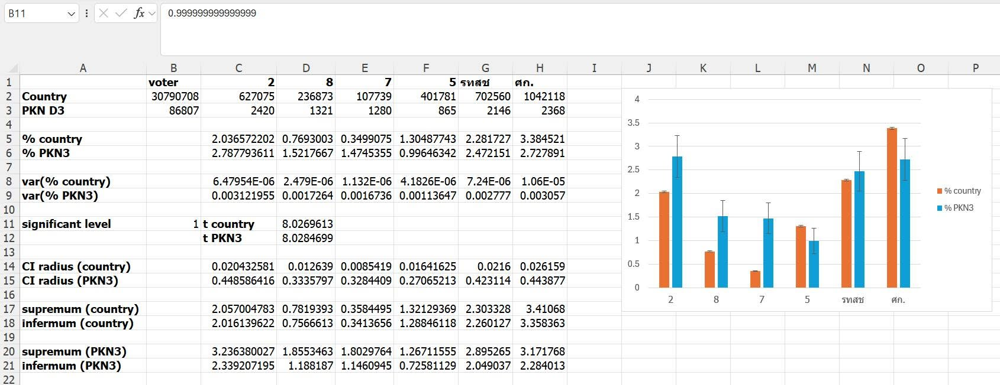

This article is copied from my post in facebook with some corrections. If you want to read the original post, you could click this
link.
Prachuab Khiri Khan Election Distric 3 (now let's call it PKN3) has the election result after 93% of counting. The 3 highest score in member list score are
1. Democrat Party
2. Bhumjaithai Party (BJT)
3. People's Party (PP)
However, there are some suspicious score under the sixth rank party except UTNP and EC which is quite famous. Also, there's a party name MP which you may hear with the name of Kannavee Suebsang the leader of the party. Observe that other parties' name are unknown. Their poster is also unseen; therefore, this is suspicious as we should analyze further.
First, we must proof that these score are unusual or not. We consider valid vote minus no vote, so we get
Overall the country : 30790708 score
PKN3 : 86807 score
This score is about 0.2819% of the country. If we assume* the valid vote is distributed uniformly in the country (vote no is excluded since data is not enough.). We could calculate the expected value for each party in PKN3 as below.
P.C.T.P : 1768 score (actual : 2420)
FP : 668 score (actual : 1321)
MP : 304 score (actual 1280)
RJT : 1133 score (actual : 865)
UTNP : 1981 score (acutal : 2146)
EC : 2938 score (actual : 2368)
Observe that 3 first parties are obviously higher than the expected. Then, we shall analyze and discuss about this data further. Observe (again) that these parties has remarkable number which are 2, 7, 8. This lead us to the first discussion question.
(1) Do candidates number 2, 7, and 8 buy votes?
The answer is highly probably. There's no reason by which people vote these number. However, there're 7 candidates in the distric. Vote-buying for the number 8 is unexplained. (Remind that these parties has no banner in the distric, so vote-buying by these parties is impossible.)
(2) If there's vote-buying, how can we explain the number 8 voting?
It's possible that voters perform some misvotes. As the ballot has 29 numbers per column, the number 8 is next to the 37 which is of BJT. However, the data also has some nuisance factor; therefore, the expected values may deviate from the actual. (The actual value might be in the CI supremum.) Hence, the number 2 and 8 may not the vote-buyer. (Nevertheless, the number 7 has the actual score 4.21 times of the expected is obvious.)
To summarize, the number 2, 7, 8 are suspicious, while the number 2 and 8 has no significant proof. Conversely, the number 7 is statistically illegal. However, we should use stronger evidence for legal move.
---
This post is written with right as state in the constitution without any person attacking. Therefore, If you upset with this, you should calm down since you have no right to sue me.
---
Note :
* This assumption is valid when the election has no or little biases. That is it works on extreme small parties as I shown above. Famous parties like PP, PTP, BJT etc. can't use this assumption.
For more rigorous analysis with higher confidence level (CI is wider.), we get the result as in the image below. In this analysis, I use the machine epsilon precision in MS Excel. The result said the number 2, 7, and 8 still significantly suspicious.
